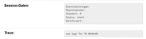

Termine buchen im BA Friedrichshain/Kreuzberg
Frei nach dem Motto: Auch die kleinen Dinge sind wichtig, hab ich mal alle meine L33T-Haxx0r-Skillz herausgeholt und 13 Minuten in einen kleinen Bug auf den behördlichen Seiten der Berliner Bezirksämter investiert.
Willst du einen Termin beim Bezirksamt Friedrichshain/Kreuzberg von Berlin buchen, weil das telefonisch nicht möglich ist? Dann stehst du vor einer kleinen Herausforderung: Das funktioniert nämlich ausgerechnet bei diesem Bezirksamt nicht. Die Übersichtsseite für die Terminbuchung führt beim Klick auf “Termin buchen” nur zu einer lapidaren Fehlermeldung, während alle anderen Links zu funktionieren scheinen:
[caption id=“attachment_2319” align=“aligncenter” width=“300”] 
{kind=link}
Das Problem ist, dass es erstens keinen anderen Weg gibt, um an die Terminplanung zu kommen - oder diese sehr gut versteckt ist. Du kannst jetzt also die Id für die Logdatei am Telefon den vermutlich irritierten BA-Mitarbeiter/innen mitteilen oder das Problem selber fixen. Das ist nämlich gar nicht so schwierig. Außerdem gibt es auch gar keine E-Mail-Adresse, an die man sich wenden kann. Also schauen wir mal, was da falsch läuft.
Das ist die URL, die sich hinter dem defekten Link versteckt:
Und so sieht die URL aus, die hinter einem funktionierenden Link zur Terminbuchung steckt:
https://service.berlin.de/terminvereinbarung/termin/tag.php?termin=1&dienstleister=122900&anliegen[]=318991&herkunft=1
Offenbar hat sich also etwas an der internen Struktur geändert und man vergessen, die Verknüpfung für das Bezirksamt Fhain/Xberg anzupassen. Was hat sich geändert? Zunächst einmal lautet die Domain offenbar service.berlin.de, nicht mehr www.berlin.de. Das ist aber nicht der fehlerhafte Teil, beide Domains funktionieren.
Außerdem wird der GET-Parameter anliegen wohl als Array erwartet: anliegen[]. Außerdem ist der Parameter dienstleister nicht gesetzt, der wohl die Id für die entsprechende Abteilung erwartet. Die Id für das Standesamt im BA Fhain/Xberg findet man in der URL zur Übersichtsseite dieser Behörde:
https://service.berlin.de/dienstleistung/318991/standort/122898/
Die Id 318991 steht für das Bezirksamt selber, die Id für das Standesamt ist 122898, das Jugendamt versteckt sich hinter der Id 123593. Das die Terminverbeinbarung nur für das Standesamt funktioniert, packen wir dessen Id also in eine funktionierende URL:
https://service.berlin.de/terminvereinbarung/termin/tag.php?termin=1&dienstleister=122898&anliegen[]=318991&herkunft=1
Wenn du also einen Termin beim Standesamt vom Bezirksamt Friedrichshain/Kreuzberg buchen möchtest, nutze doch gerne diesen Link: